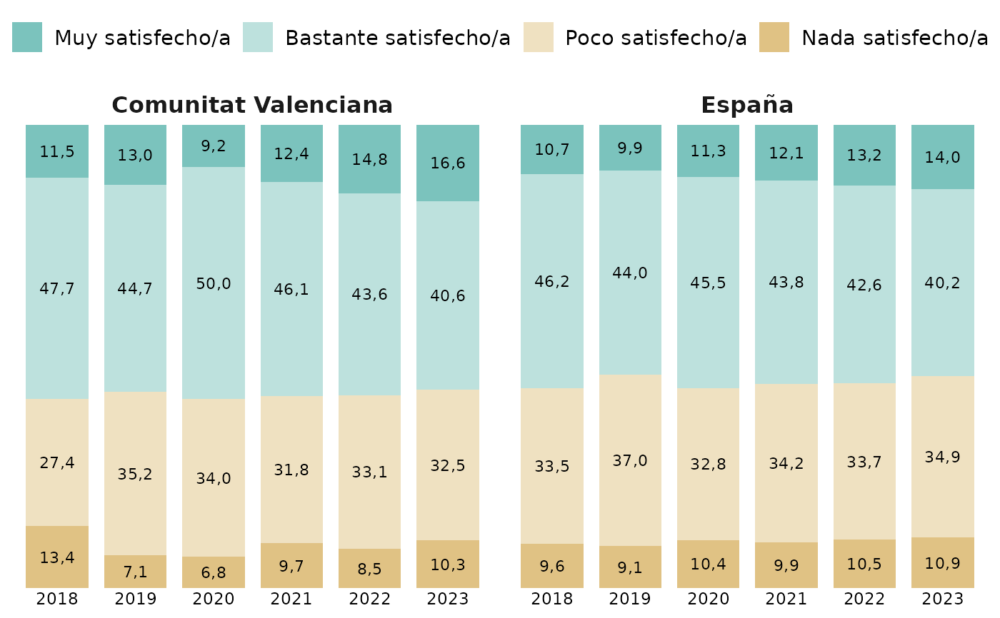
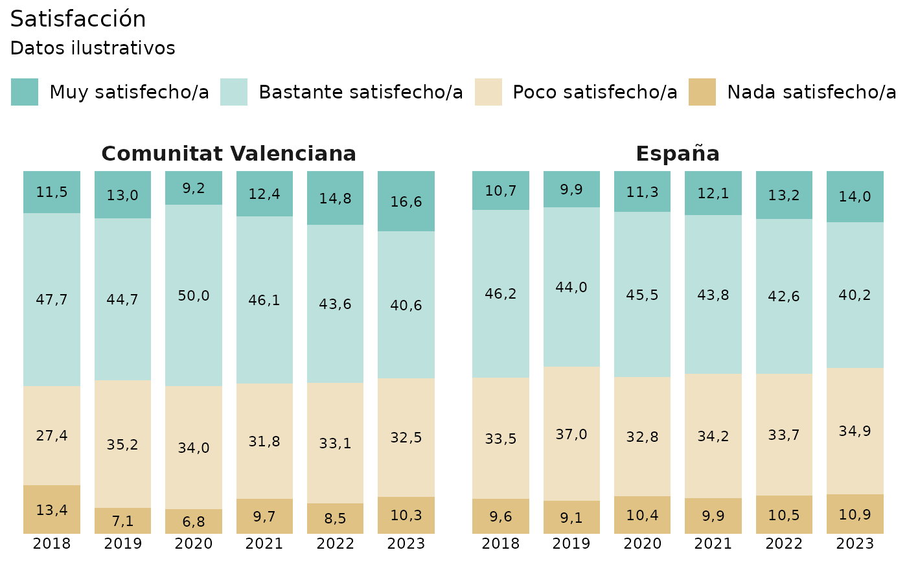

Genera un gráfico de columnas apiladas para representar la distribución de una variable categórica. Opcionalmente, permite comparar grupos mediante facetas.
Usage
grafico_columnas_apiladas(
datos,
x,
categoria,
valor = "valor",
faceta = NULL,
niveles = NULL,
colores = NULL,
titulo = NULL,
subtitulo = NULL,
accuracy = 0.1,
minimo_etiqueta = 2,
color_texto = "black",
tamanyo_texto = 3,
ancho_columna = 0.8,
filas_leyenda = 1
)Arguments
- datos
Un
data.frameen formato largo con los datos que se desean representar.- x
Cadena de texto con el nombre de la variable del eje X.
- categoria
Cadena de texto con el nombre de la variable que define los segmentos de las columnas.
- valor
Cadena de texto con el nombre de la variable numérica. Por defecto,
"valor".- faceta
Cadena de texto con el nombre de la variable utilizada para crear facetas. Si es
NULL, se genera un único panel.- niveles
Vector opcional con el orden de las categorías. Si se especifica, debe contener todos los valores presentes en
categoria.- colores
Vector nombrado opcional con los colores de las categorías. Los nombres deben coincidir con sus valores.
- titulo
Título del gráfico. Por defecto,
NULL.- subtitulo
Subtítulo del gráfico. Por defecto,
NULL.- accuracy
Precisión utilizada para las etiquetas numéricas. Por defecto,
0.1.- minimo_etiqueta
Valor mínimo que debe alcanzar un segmento para mostrar su etiqueta. Por defecto,
2.- color_texto
Color de las etiquetas numéricas. Por defecto,
"black".- tamanyo_texto
Tamaño de las etiquetas numéricas. Por defecto,
3.- ancho_columna
Anchura de las columnas. Por defecto,
0.8.- filas_leyenda
Número de filas de la leyenda. Por defecto,
1.
Details
Las categorías pueden ordenarse explícitamente y representarse mediante una paleta de colores personalizada.
Cada combinación de x, categoria y, si se utiliza, faceta debe
identificar una única observación.
Examples
datos_ejemplo <- data.frame(
territorio = rep(
c("Comunitat Valenciana", "España"),
each = 24
),
anyo = rep(
rep(2018:2023, each = 4),
times = 2
),
respuesta = rep(
c(
"Muy satisfecho/a",
"Bastante satisfecho/a",
"Poco satisfecho/a",
"Nada satisfecho/a"
),
times = 12
),
valor = c(
# Comunitat Valenciana
11.5, 47.7, 27.4, 13.4,
13.0, 44.7, 35.2, 7.1,
9.2, 50.0, 34.0, 6.8,
12.4, 46.1, 31.8, 9.7,
14.8, 43.6, 33.1, 8.5,
16.6, 40.6, 32.5, 10.3,
# España
10.7, 46.2, 33.5, 9.6,
9.9, 44.0, 37.0, 9.1,
11.3, 45.5, 32.8, 10.4,
12.1, 43.8, 34.2, 9.9,
13.2, 42.6, 33.7, 10.5,
14.0, 40.2, 34.9, 10.9
)
)
niveles_ejemplo <- c(
"Muy satisfecho/a",
"Bastante satisfecho/a",
"Poco satisfecho/a",
"Nada satisfecho/a"
)
colores_ejemplo <- c(
"Muy satisfecho/a" = "#5AB4AC",
"Bastante satisfecho/a" = "#ACD9D5",
"Poco satisfecho/a" = "#EBD9B2",
"Nada satisfecho/a" = "#D8B365"
)
p <- grafico_columnas_apiladas(
datos_ejemplo,
x = "anyo",
categoria = "respuesta",
faceta = "territorio",
niveles = niveles_ejemplo,
colores = colores_ejemplo
)
p

p + ggplot2::labs(
title = "Satisfacción",
subtitle = "Datos ilustrativos"
)
